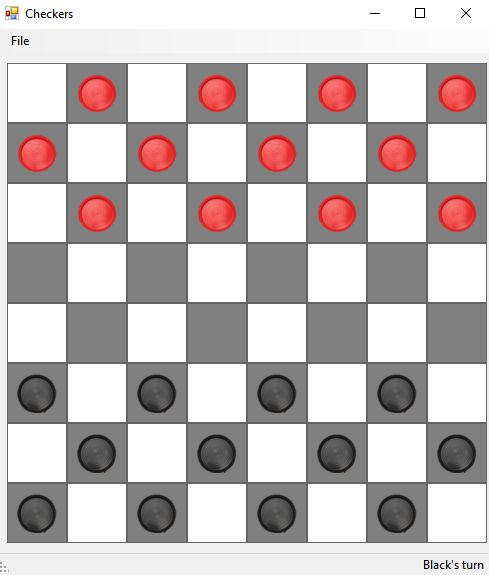
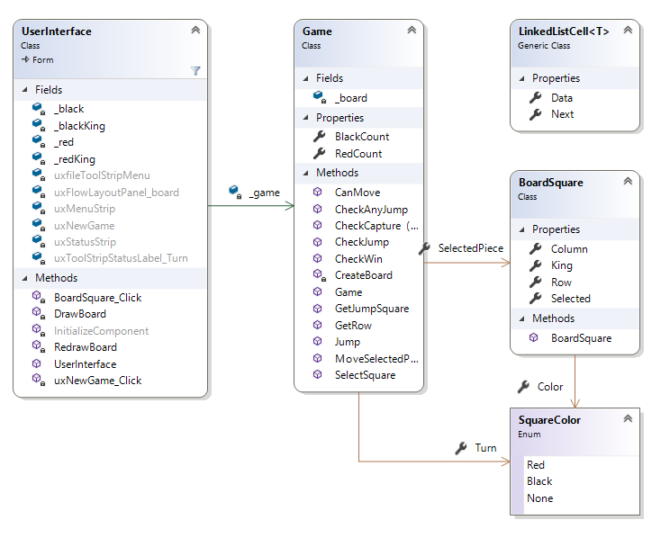
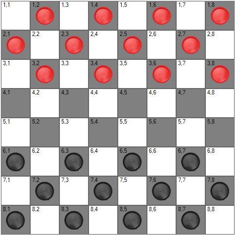

For this assignment, you will be writing a program that can be used to play checkers (aka English Draughts). Checkers is a simple game played on a 8x8 checkered board (32 dark squares and 32 light squares). There are two colors of pieces, red and black, each being played by one human player. Each player starts with 12 pieces. The black piece player goes first. Rules of moving, jumping (capturing), and board layout can be found at this link (ignore instructions specific to the site). The objective of the game is to capture all of the opposing pieces. Do not worry about ties or draws.
Create a GitHub repository using this URL and clone it to your local machine. This solution contains a new Windows Forms Application in which Form1.cs has been renamed UserInterface.cs. The pictures used for the checker pieces are in the included pics folder. An obfuscated executable is included a zip folder.
The base interface is very simple. It should be impossible to maximize or otherwise resize this window (set the Form's MaximizeBox property to false and its FormBorderStyle property to Fixed3D to accomplish this). It includes a menu strip that has File->New Game as menu items. If a user clicks the "New Game" option, the existing board will be cleared and replaced with a fresh game. Under the menu strip, a FlowLayoutPanel should be added. The program will place all of the board squares, with the pieces, into this panel. The user will be able to interact with the board by clicking on a piece then the board square they wish to move it to. A piece is highlighted once it is selected. The user can then click on another square to move the piece or capture an enemy piece. If the square the user clicked to move to is not a valid move, a MessageBox appears indicating that it is an invalid move. At the bottom, add a StatusStrip that has the RightToLeft property set to Yes. It should also contain one label. This will indicate whose turn it is (ex: "Red's Turn"). Once all of the pieces of either side have been captured, the game is over and a MessageBox appears indicating the winner. The rest of the interface is generated by your program.


The UserInterface class is primarily used for drawing/updating the UI for when the game is created and when a piece is interacted with. All of the actual logic for checkers is contained inside the Game class. Each square on the checker board will be represented using BoardSquare's. This class is also indicates whether or not a square contains an actual piece. The enum SquareColor is used to indicate this information.
For this assignment, you will be representing the checkers board using a dictionary of linked lists. For the dictionary, the Key will be the row of the board. The Value will be the first cell of a linked list containing each BoardSquare. This cell should be the left most square (i.e. column) in that row. This structure can be seen when the board is numbered like the image below. Each row has an entry in the dictionary, where the key of each row is a number 1-8. Each value in the dictionary is a linked list of squares, also labeled 1-8, for a given row. The text in each of the below squares are the row-column for each board square. These are given in this image to help with debugging. To add this, when drawing the board, simply set the Text property.

Specific requirements for the above classes are given in what follows. Feel free to add more private methods if you feel it improves the code. Note that some methods below are public for testing purposes.
This class is given.
The class contains the following properties:
public bool King
public SquareColor Color
public bool Selected
public int Row
public int Column
The class also contains a public constructor that takes in two integers as parameters. These represent the row and the column of the BoardSquare class. The Row and Column variables defined above should be set to these parameters.
In addition to the BoardSquare class, the BoardSquare.cs file should contain an enumerator defined as:
1public enum SquareColor2{3 Red, 4 Black, 5 None6}We have used enumerators like this before, like with DialogResult when using open/save dialog boxes for files. Red, Black, and None can be accessed like so: *SquareColor.Black. These are used to indicate the color of a piece. *SquareColor.None is used if there is no piece on a square.
The Game Class holds most of the logic for checkers. This class contains the following fields:
private Dictionary<int, LinkedListCell< BoardSquare >> _board
This class contains the following properties:
public int RedCount
public int BlackCount
public BoardSquare SelectedPiece
public SquareColor Turn
This class contains the following methods:
private void CreateBoard()
public Game()
public LinkedListCell< BoardSquare > GetRow(int row)
private BoardSquare SelectSquare(int row, int col)
private bool CheckCapture(LinkedListCell< BoardSquare > cell, int targetCol, SquareColor targetColor, out BoardSquare result)
private bool CheckCapture(LinkedListCell< BoardSquare > cell, int targetCol, SquareColor targetColor)
private bool CheckJump(int enemyRow, int targetRow, int enemyCol, int targetCol, BoardSquare current, SquareColor enemy)
private bool CheckAnyJump(BoardSquare current, SquareColor enemy)
public bool GetJumpSquare(BoardSquare target, SquareColor enemy, out int row, out int col)
private bool Jump(BoardSquare current, BoardSquare target, SquareColor enemy, out bool jumpMore)
public bool CanMove(bool forceJump,BoardSquare targetSquare, SquareColor enemy, out bool jumpMore)
public bool MoveSelectedPiece(int targetRow, int targetCol)
The UserInterface class is responsible for drawing and updating the checker board. This class contains the following fields:
private Game _game
private Image _red
private Image _redKing
private Image _black
private Image _blackKing
This class contains the following methods:
private void DrawBoard()
This functions draws the checker board in the GUI.
The FlowLayoutPanel that contains the board labels should be cleared first of any Controls. The panel Width should be set to 60 * 8.
The Height should be 30 more than the Width. The width and height is set dynamically to make the GUI look clean on 4K displays (the VS Designer window is not that great at this).
Then, the FlowLayoutPanel should be loaded with new Labels that represent each square on the game board. Do this by looping through each LinkedListCell in each row of the game board. You can get each row by calling the GetRow method from the GameClass. Once created, the Label should be added to the panel. That can be done by adding the label to the Controls property of the layout panel. The Labels will have the following properties set:
Width: 60
Height: 60
BackColor: Color.White if the sum of Column and Row is even, Color.Gray otherwise (mod operations are your friend here!).
Margin: Left and Right margin should be 0. Note that this can be done by using a Padding struct (Links to an external site.) that has Left and Right set to 0, then setting the Margin property to the padding you just created. This is because the Margin properties (Left, Right, Up, and Down) cannot be modified directly.
Image: Set to the corresponding image stored in the variables described above base off the color of the BoardSquare.
Name: "row,column" (Used if you want extra debugging help)
Click: Dynamically bind an event handler described below. This can be done like so:
public UserInterface()
private void RedrawBoard()
This class contains the following event handlers:
The new game menu item should have a click event handler that initializes a new game.
Each Label that represents a square on the game board will have a click event handler called BoardSquare_Click that is added dynamically when the board is drawn. This method should get the Label that was clicked (done by casting the sender as a Label.
Be sure to test win conditions for both sides, and each kind of move/jump. To assist in testing your program, it can be helpful to add text to your board squares to indicate the row and column. Unit tests are also provided to test PART of the features. These unit tests are not exhaustive, meaning they do not test every feature/requirement. The CheckAnyJump, Jump, and MoveSelectedPiece are not unit tested at all since they highly depend on the state of the board through interactions with the GUI. The unit tests are provided to assist testing helper methods of the more complex methods (like Jump and MoveSelectedPiece).
Each move made in the game should be instant and have relatively no delay. There will be a cascade effect when creating a new game.
Be sure to refresh your Team Explorer, commit all your changes, then push your commits to your GitHub repository. Then submit the entire URL of the commit that you want graded. There is no need to submit a comment, as you will not have a completion code.
Important: If the URL you submit does not contain the 40-hex-digit fingerprint of the commit you want graded, you will receive a 0, as this fingerprint is the only way we can verify that you completed your code prior to submitting your assignment. We will only grade the source code that is included in the commit that you submit. Therefore, be sure that the commit on GitHub contains all six ".cs" files, and that they are the version you want graded. This is especially important if you had any trouble committing or pushing your code.